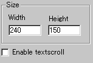
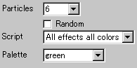
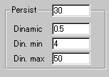

|
This applet visualises stunning images of galaxy
including the Big Bang, supernova and spiral and rotating systems
with selected colour palettes.
[For more technical
information about the available parameters, click here.]
Most parameters are self-explanatory and you can
always see brief description of each parameter by moving the mouse
pointer over the wizard.
 |
First of all, define the applet size at "Width"
and "Height". Then you decide
if textscroll function is enabled by checking "Enable
textscroll" box.
|
 |
Now, you define the actual galaxy
effect. With "Particles", you set particle
density of the galaxy between value 0 and 7. |
Higher values mean higher density.
Unless you choose "Random" selection of galaxy
scripts, you need to select specific one from the following 12 galaxy
scripts:
0 - Circular Galaxy
1 - Sphere -> Ring
2 - Tubular Galaxy
3 - Spiral Galaxy
4 - Rotating System
5 - Into Sphere
6 - Supernova
7 - Sphere -> Tubular
8 - Wave -> Atom
9 - Cone -> Wave
10 - All effects one colour
11 - All effects all colours |
Once your choice is done, you then decide which colour palette
should be applied to the galaxy.
0 = white
1 = blue
2 = red->black
3 = red->violet
4 = green
5 = red->white |
 |
Next you define light. By setting
the value for light persistence higher than 0 and lower
than 128, you can control how long it takes for light dots to
reach dark area in the scene. |
The parameter "Dinamic", which may not be appropriately
so named though, stands for the variation speed of light dots, which
vary between Din. min and Din. max values.
In other words, "Dinamic" is a "speed" of transition
between the min and max persistence set with "Din.min" and "Din.max"
parameters.
Proceed to the textscroll
menu if you have checked the textscroll box; otherwise go to
the expert menu.
|